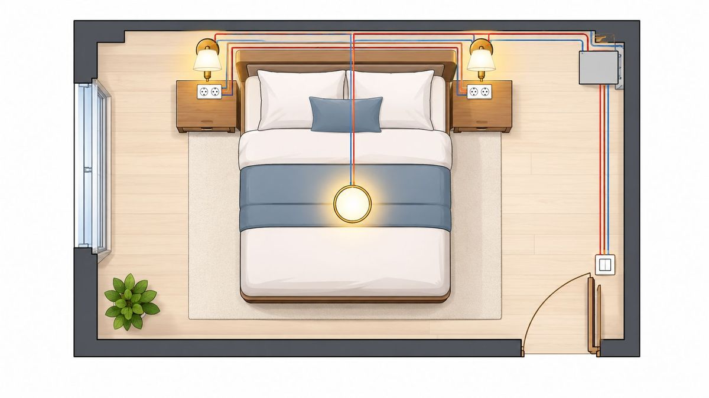

спальне 12–16 м² нужны 8–10 розеток и 2–3 линии: розеточная 3×2,5 мм² на автомате 16 А, свет 3×1,5 мм² на 10 А, кондиционер отдельно. Бра вешают на 1 100–1 300 мм, розетки у кровати — на 150–300 мм от пола, выключатели — у двери и у кровати. Электрика «под ключ» — 18 000–45 000 руб.; перенос розетки после ремонта — 3 500–8 000 руб. за точку.
Сколько розеток нужно спальне
| Зона | Розетки | Высота |
|---|---|---|
| У кровати, слева и справа | 2–4 шт. | 150–300 мм или 600–700 мм |
| Туалетный столик | 2 шт. | 900–1 000 мм |
| ТВ или комод | 2–3 шт. | 300 мм или скрытая за техникой |
| Кондиционер | 1 шт. | 2 200–2 500 мм |
| Пылесос, утюг | 1–2 шт. | 300 мм у двери |
| Рабочее место, если есть | 2–3 шт. | 900–1 000 мм |
Розетки за кроватью бесполезны: их перекрывает изголовье. Ставят сбоку, на 100–200 мм от края кровати, или выводят на изголовье.
Высоты и привязки

| Элемент | Высота от пола | Отступ |
|---|---|---|
| Розетки у кровати | 150–300 мм | 100–200 мм от края кровати |
| Розетки над тумбой | 600–700 мм | по центру тумбы |
| Бра | 1 100–1 300 мм | по центру над тумбой |
| Выключатель у двери | 900–1 000 мм | 150 мм от наличника |
| Проходной выключатель | 700–800 мм | у кровати, на 150 мм от матраса |
Выключатель у кровати на 700–800 мм — чтобы дотянуться лежа. На 900 мм уже приходится приподниматься, и им перестают пользоваться.
Линии и автоматы
| Линия | Кабель | Автомат | Нагрузка |
|---|---|---|---|
| Розетки спальни | 3×2,5 мм² | 16 А + УЗО 30 мА | до 3,5 кВт |
| Свет | 3×1,5 мм² | 10 А | до 2,2 кВт |
| Кондиционер | 3×2,5 мм² | 16 А | 1,5–2,5 кВт |
| Тёплый пол (если есть) | 3×2,5 мм² | 16 А + УЗО 30 мА | до 2,5 кВт |
Одна розеточная линия на спальню — норма. Если планируется обогреватель 2 кВт и кондиционер, их выносят на отдельные автоматы: одновременная работа даёт 4,5 кВт и выбивает 16 А.
Сценарии света
| Сценарий | Светильники | Мощность | Управление |
|---|---|---|---|
| Общий | люстра или 4–6 спотов | 40–60 Вт LED | выключатель у двери |
| Чтение | 2 бра | 2×5–7 Вт | проходной у кровати |
| Ночник | розетка с таймером или лента | 2–5 Вт | датчик или таймер |
| Подсветка шкафа | LED-лента | 5–8 Вт/м | концевой выключатель |
Два проходных выключателя (у двери и у кровати) — минимум для спальни. Умные реле и «сценарии» стоят 3 000–12 000 руб. и требуют нейтрали в подрозетнике.
Если в спальне спит ребёнок, розетки берут со шторками и ставят на высоту от 1 000 мм либо закрывают заглушками. УЗО 10 мА на детскую линию — дополнительная защита: срабатывает при 10 мА утечки вместо 30 мА и стоит на 1 500–3 000 руб. дороже.
Кондиционер, тёплый пол и умный дом
| Система | Что заложить | Цена |
|---|---|---|
| Кондиционер 2,5 кВт | линия 3×2,5 мм², автомат 16 А, трасса 3–5 м | 4 000–9 000 руб. за электрику |
| Тёплый пол 10 м² | кабель 10–12 Вт/м², терморегулятор, УЗО 30 мА | 8 000–18 000 руб. |
| Умные реле света | нейтраль в подрозетнике, глубина 45 мм | 3 000–12 000 руб. |
| Датчик движения | вывод на 2 200 мм, линия света | 1 500–4 000 руб. |
Нейтраль в подрозетниках выключателей закладывают заранее: без неё умные реле работают нестабильно или не работают вовсе, а тянуть провод после ремонта — это штроба и покраска. Стоимость нейтрали на этапе монтажа — 300–600 руб. за точку.
Как сэкономить без риска
| Решение | Экономия | Чем платите |
|---|---|---|
| Кабель в плинтусе вместо штробы | 8 000–18 000 руб. | плинтус 60–80 мм, видимые короба |
| Одна розеточная линия на спальню | 3 000–6 000 руб. | нельзя включить обогреватель и кондиционер сразу |
| Розетки без УЗО на свете | 1 500–3 000 руб. | риск при замене лампы мокрыми руками |
| Без проходного выключателя | 1 500–4 000 руб. | каждый вечер идти к двери |
Экономить разумно на количестве точек, но не на УЗО и сечении кабеля. Автомат 16 А на кабеле 1,5 мм² — это нагрев жилы до 70 °C и риск возгорания в штробе, которое не видно до пожара.
Порядок работ
- Нарисовать план мебели: кровать, тумбы, шкаф, ТВ — до разметки розеток.
- Отметить точки с привязкой к чистовому полу и стенам.
- Отштробить стены, уложить кабель в гофре, закрепить подрозетники.
- Смонтировать проходные выключатели и выводы под бра.
- Сделать фотофиксацию трасс до штукатурки.
- Установить розетки и светильники после чистовой отделки, проверить УЗО.
Смета 2026
| Позиция | Спальня 14 м² | Стоимость |
|---|---|---|
| Кабель 3×2,5 мм² | 25–35 м | 2 500–4 500 руб. |
| Кабель 3×1,5 мм² | 20–30 м | 1 500–3 000 руб. |
| Штробление | 30–40 м | 11 000–24 000 руб. |
| Монтаж точки | 10–14 шт. | 9 000–25 000 руб. |
| Дифавтомат 16 А | 2 шт. | 5 000–9 000 руб. |
| Проходные выключатели | 2 шт. | 1 500–4 000 руб. |
Итого 30 500–69 500 руб. с работой и материалами. Перенос одной розетки после чистовой отделки — 3 500–8 000 руб. плюс покраска участка стены.
Чек-лист перед штроблением
- План мебели нарисован, розетки не перекрыты изголовьем.
- Бра на 1 100–1 300 мм, выключатель у кровати на 700–800 мм.
- УЗО 30 мА на розеточной линии.
- Кондиционер на отдельной линии.
- Фотофиксация трасс сделана.
Частые вопросы
Сколько розеток нужно в спальне 14 м²?
8–10: по 2 у каждой стороны кровати, 2 у столика, 2–3 у ТВ, 1 у двери. Плюс отдельная линия на кондиционер.
На какой высоте делать розетки у кровати?
150–300 мм от пола — скрыты тумбой и не мешают. Если тумбы нет, 600–700 мм, чтобы дотянуться не наклоняясь.
Нужен ли проходной выключатель?
Да, у кровати на 700–800 мм. Иначе свет придётся выключать у двери и возвращаться в темноте.
Можно ли поставить умный выключатель?
Можно, но нужна нейтраль в подрозетнике. В старых домах её нет — придётся тянуть отдельный провод или брать модель без нейтрали.
Что делать с розеткой за шкафом?
Не ставить: доступ перекрыт. Выводят рядом со шкафом или над ним, если там техника.
Сколько стоит электрика в спальне под ключ?
30 500–69 500 руб. с материалами и работой. Без штробления (кабель в плинтусе) — на 30–40 % дешевле.
Можно ли сделать электрику в спальне без штробления?
Можно: кабель в кабель-канале по плинтусу или под гипсокартоном. Дешевле на 8 000–18 000 руб., но видно короба и ограничена свобода переноса точек.
Какой автомат ставить на розетки спальни?
16 А на кабеле 3×2,5 мм² плюс УЗО 30 мА типа A. Автомат 25 А на 2,5 мм² не защищает кабель — жила греется раньше срабатывания.
Нужна ли розетка под телевизор в спальне?
Да, 2–3 штуки за ТВ плюс вывод для антенны и интернета. Розетки прячут за корпусом на кронштейне, но оставляют доступ: смещают блок на 100 мм в сторону.
Можно ли подключить бра к одной линии со светом?
Можно, но тогда бра включаются вместе с люстрой. Удобнее отдельная линия или проходной выключатель у кровати — это 1 500–4 000 руб. на этапе монтажа.